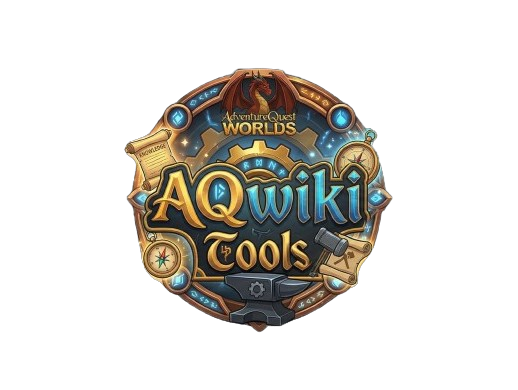

AQWikiTools
Enhance your AQW Wiki experience
Inventory Sync
Items synced
--
Status
Not synced
Quick Links
Settings
AQWikiTools enhances the AQW Wiki browsing experience with item previews, calculators, inventory tracking, and more.
Inspired by the Wiki Image and AqwDoIhave projects. Credit to their respective creators for the original concepts and data.